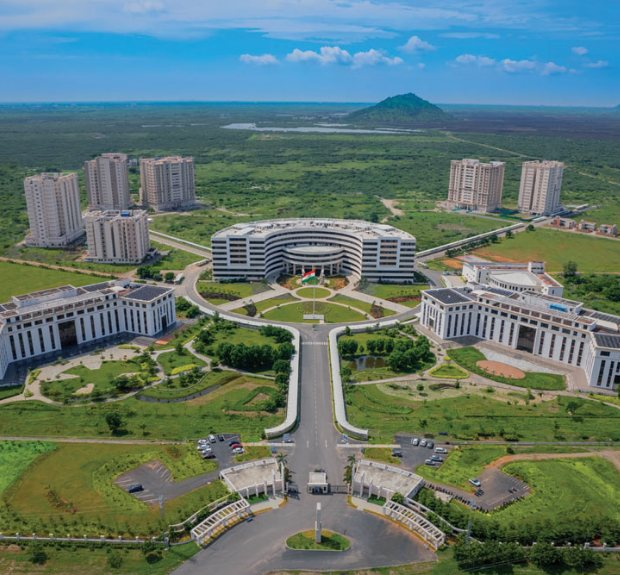

Host university
VIT-AP University
Founded in 2017 in Amaravati, Andhra Pradesh, VIT-AP has quickly become a leading centre of higher education in India. Its 100-acre campus has seven schools offering 24 undergraduate, postgraduate and Ph.D. programmes in engineering, sciences, arts, languages, business and law, with students and research scholars from 26 Indian states and six countries.
Research is central: Centres of Excellence in AI & Robotics, IoT, Cyber Security, Renewable Energy and the MeitY-sponsored VLSI “Chip to Startup” programme. The university holds ISO 21001, ISO 50001 and ISO 14001 certifications for education quality, energy and environmental management.
- 17,000+
- students
- 400+
- research scholars
- 4,000+
- publications
- 68
- h-index
Part of the VIT Group, founded in 1984 by Chancellor Dr. G. Viswanathan: an Institute of Eminence with campuses in Vellore, Chennai, Amaravati, Bhopal, Bangalore and Mauritius, and over 95,000 students from more than 50 countries.
Visit vitap.ac.in